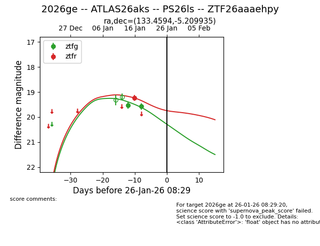
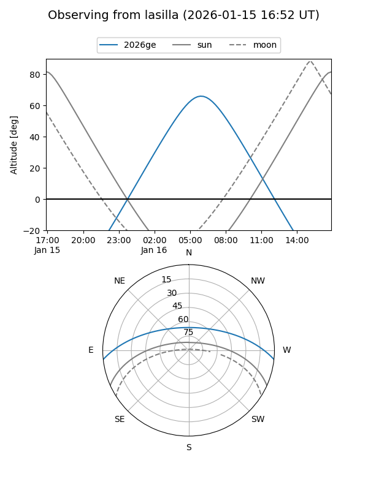
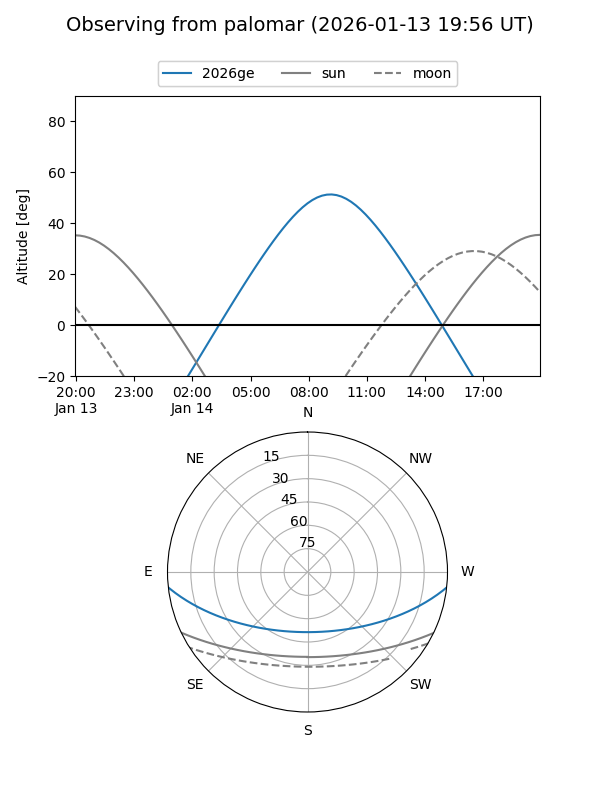
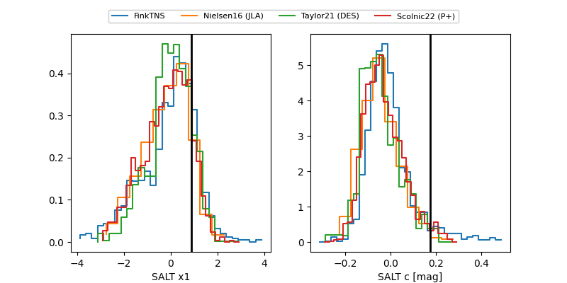

2026ge
Target 2026ge at 2026-01-27 08:41
Aliases and brokers:
FINK: link
Lasair: link
ALeRCE: link
TNS: link
YSE: link
alt names
ZTF26aaaehpy (ztf,fink_ztf)
2026ge (tns,yse)
ATLAS26aks (atlas)
PS26ls (panstarrs)
Coordinates:
equatorial (ra, dec) = 133.4594,-5.20994
equatorial (HMS+DMS) = 08:53:50.25,-05:12:35.77
galactic (l, b) = (232.9308,+24.18989)
Flags:
Photometry:
last ztfg=19.58, ztfr=19.24
2 ztfg, 1 ztfr detections
Lightcurve

Visibility


Additional plots
